El condensador
Los condensadores son componentes capaces de almacenar pequeñas cantidades recuperables de energía eléctrica. Están construidos con dos placas metálicas paralelas, denominadas armaduras, separadas entre sí por un material aislante conocido como dieléctrico.
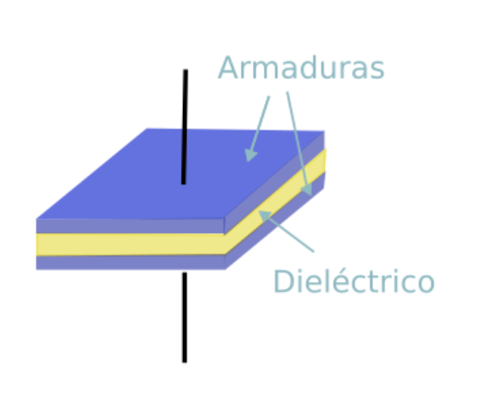
El símbolo eléctrico del condensador representa precisamente esas dos placas paralelas:
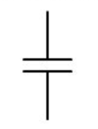
FUNCIONAMIENTO BÁSICO
Utilizando una fuente de tensión externa, podemos "extraer" electrones de una armadura y llevarlos hasta la otra por un circuito externo. Si luego desconectamos el condensador, las cargas no pueden moverse porque no pueden atravesar el dieléctrico que hay entre las placas. Quedará una armadura con exceso de electrones (cargada negativamente) y la otra con falta de electrones (cargada positivamente). Decimos que el condensador ha quedado "cargado".
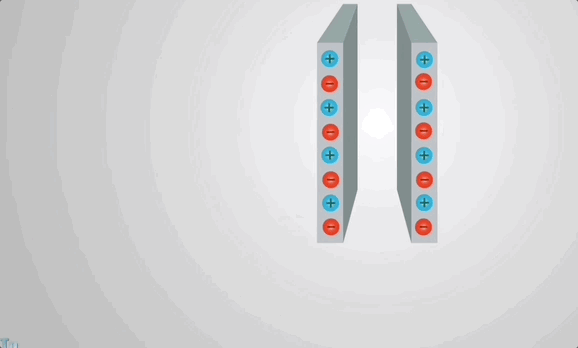
Ese desequilibrio de cargas que hay entre las armaduras del condensador se mantiene hasta que facilitemos un camino externo para que los electrones que sobran de una placa vuelvan a rellenar los "huecos" que han quedado en la otra. Al hacerlo, los electrones se moverán por el circuito externo, provocando una corriente eléctrica que podríamos utilizar para alimentar alguna carga. Decimos que el condensador se "descarga". Cuando se igualen las cargas, se detendrá la corriente y el condensador habrá quedado descargado completamente.
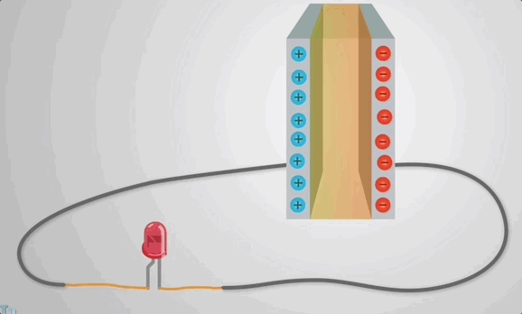
Así, el condensador es como un "depósito" de carga que podemos llenar y luego utilizarlo cuando queramos utilizar esa carga almacenada.
Capacidad o capacitancia de un condensador
La cantidad de carga que es capaz de almacenar un condensador, por unidad de voltaje entre las placas, se denomina capacidad o capacitancia del condensador (C):
| \[C=\frac{q}{V}\] |
Donde:
- C: capacidad del condensador en faradios (F)
- q: carga almacenada en las placas, en culombios (C)
- V: diferencia de potencial entre las armaduras, en voltios (V)
Como ves, la capacidad de un condensador se mide en faradios. Conociendo la fórmula anterior, podemos decir que un faradio es un culombio partido por un voltio. El faradio es una unidad enorme, por lo que las capacidades expresadas en faradios dan valores muy pequeños. Por eso, será habitual que siempre usemos prefijos diminutivos del Sistema Internacional. Recuerda:
| 10-3 F | milifaradio (mF) |
| 10-6 F | microfaradio (μF) |
| 10-9 F | nanofaradio (nF) |
| 10-12 F | picofaradio (pF) |
La capacidad (C) depende de cómo está construido el condensador. En concreto, depende:
- Del tipo de material utilizado como dieléctrico (a mayor permitividad absoluta, ε, mayor capacidad)
- Del área de las armaduras (a mayor área, A, mayor capacidad)
- De la distancia que separa las armaduras (a menor distancia, d, mayor capacidad)
Es decir, que la capacidad del condensador también puede calcularse así:
| \[C=\varepsilon \frac{A}{d}\] |
Aplicaciones de los condensadores
Los condensadores pueden utilizarse para multitud de aplicaciones, siendo un elemento fundamental de los circuitos electrónicos. Vamos a ver algunas de las principales aplicaciones de los condensadores:
Desacoplamiento de circuitos (bypass)
Suelen utilizarse junto a circuitos integrados y se colocan entre la fuente de alimentación y la tierra del circuito integrado:
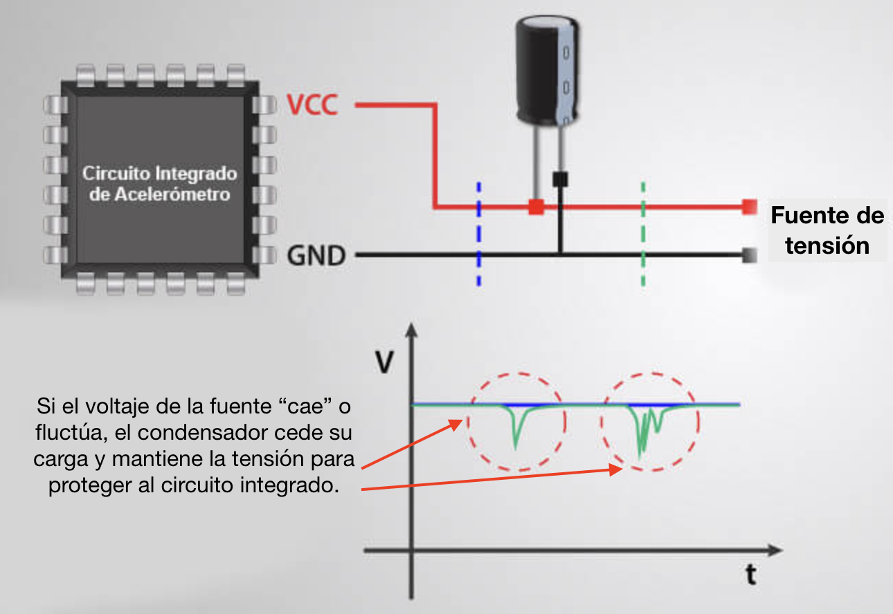
Su misión es filtrar cualquier ruido en la fuente de alimentación, como las fluctuaciones de voltaje que ocurren cuando la fuente de alimentación baja su voltaje durante un período muy corto de tiempo o cuando una parte de un circuito se conmuta. En el momento en que se produce la caída de tensión, el condensador actuará temporalmente como fuente de alimentación, manteniendo el nivel de voltaje requerido por el circuito integrado.
Convertidor de CA a CC
Otro ejemplo de aplicación típica son los condensadores utilizados en adaptadores de CC. Para convertir el voltaje de CA en voltaje de CC, generalmente se usa un rectificador de puente de diodos, como veremos en el próximo apartado. Para que se elimine el "rizado" de la tensión y que tenga un valor más constante, se utiliza un condensador de alta capacidad en paralelo con el puente.
Los circuitos rectificadores de diodos los estudiaremos en el próximo apartado y allí volveremos a apreciar la importancia del condensador en esos circuitos.
Filtrado de señales
Debido a su tiempo de respuesta específico (veremos esto con más detalle al ver la carga y descarga de los condensadores), los condensadores pueden bloquear las señales de baja frecuencia mientras permiten el paso de frecuencias más altas o al contrario.
Ejemplos de uso en filtrado de señales pueden ser:
- En receptores de radio para sintonizar frecuencias específicas y filtrar las no deseadas.
- En circuitos de cruce dentro de los altavoces, para separar las frecuencias bajas para el woofer y las frecuencias más altas para el tweeter:
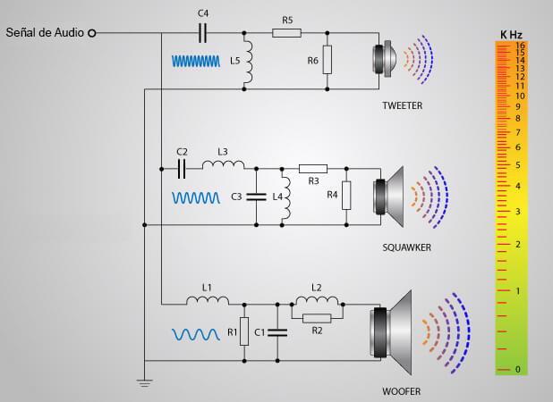
Almacenamiento de energía
Otro uso bastante obvio de los condensadores es para el almacenamiento y suministro de energía. Aunque pueden almacenar una energía considerablemente menor en comparación con una batería del mismo tamaño, su vida útil es mucho mejor y son capaces de entregar energía mucho más rápido, lo que los hace más adecuados para aplicaciones donde se necesita una gran cantidad de energía.
Sensores
Hemos visto que la capacidad de un condensador depende de su estructura y del material de su dieléctrico. Si detectamos el cambio en la capacidad del condensador, estaremos detectando al causante de dicho cambio. Por ejemplo, podemos utilizar dos aspectos de un condensador en aplicaciones de detección:
- Variación de la distancia entre las placas paralelas (d): se puede utilizar para detectar cambios mecánicos como la aceleración y la presión.
- Variación de la permitividad del material entre ellas (ε): se puede utilizar para detectar la humedad del aire. Incluso cambios mínimos de humedad en el material entre las placas pueden ser suficientes para alterar la capacidad del dispositivo, lo que podemos detectar con un circuito.
Procesamiento de señales
Los condensadores han encontrado aplicaciones cada vez más avanzadas en las tecnologías de la información y la comunicación.
- Los dispositivos de memoria dinámica de acceso aleatorio (DRAM) utilizan condensadores para representar información binaria como bits. El dispositivo lee un valor cuando el condensador está cargado y otro cuando está descargado.
- Los dispositivos de carga acoplada (CCD) utilizan condensadores en forma analógica para almacenar diferentes valores de luminosidad por ejemplo en un sensor de una cámara.
- Los condensadores también se utilizan junto con bobinas (inductores) para sintonizar circuitos a frecuencias particulares, un efecto que se aprovecha en los receptores de radio, altavoces y ecualizadores analógicos.
Tipos de condensadores
Aunque por dentro los condensadores siguen la estructura simple de dos placas separadas por un aislante, por fuera pueden variar mucho su aspecto. En esta imagen tienes diversos tipos de condensadores:
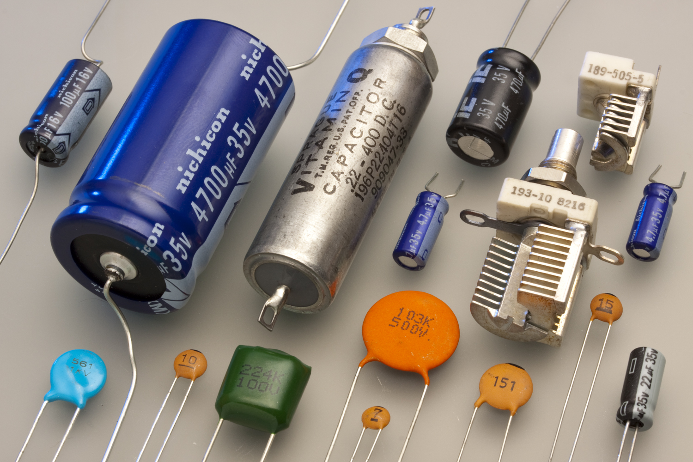
Los tipos más comunes de condensadores son los siguientes:
Condensadores de Película
También se conocen como película de polímero, película de plástico o película dieléctrica. La ventaja de los condensadores de película es que son baratos y tienen una vida útil ilimitada.
El condensador de película utiliza un material dieléctrico fino con el otro lado del condensador metalizado. Dependiendo de la aplicación, el condensador de película se enrolla en láminas finas. El rango general de tensión de estos condensadores es de 50 V a 2 kV.
Ejemplos de utilización:
- Aplicaciones de alta frecuencia, como acoplamientos de señales y filtros.
- Circuitos de audio y radio.
- Condensadores de seguridad y contra interferencias electromagnéticas.
- Aplicaciones en electrónica de potencia.
- Protección de dispositivos ante picos de tensión repentinos.
- Mejora del factor de potencia del dispositivo.
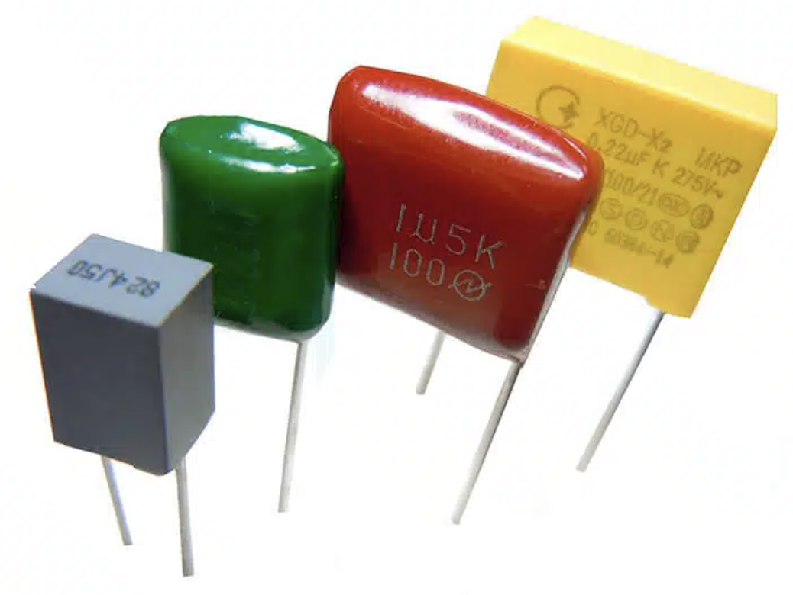
Condensadores de Papel
Utilizan papel impregnado con aceite como dieléctrico. Hay dos tipos de condensadores de papel según su construcción:
|
Condensador de lámina de papel Se fabrica tomando dos o más hojas de aluminio y colocando una hoja de papel entre ellas. El papel colocado entre las hojas de aluminio actúa como dieléctrico y las hojas de aluminio actúan como armaduras. Las hojas de papel y las hojas de aluminio se enrollan en forma de cilindro y los cables se fijan a ambos extremos de las hojas de aluminio. A continuación, todo el cilindro se recubre con cera o resina plástica para protegerlo de la humedad del aire. |
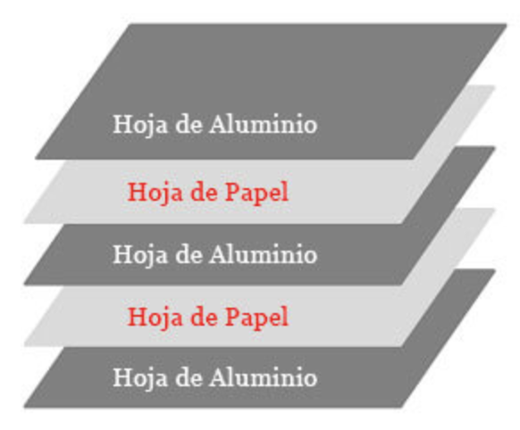 |
|
Condensador de papel metalizado El papel se recubre con una fina capa de zinc o aluminio. El papel recubierto de zinc (más frágiles y menos utilizados) o aluminio (más usados) se enrolla en forma de cilindro. A continuación, todo el cilindro se recubre con cera o resina plástica para protegerlo de la humedad. El tamaño del condensador de papel metalizado es muy pequeño en comparación con el condensador de lamina de papel. |
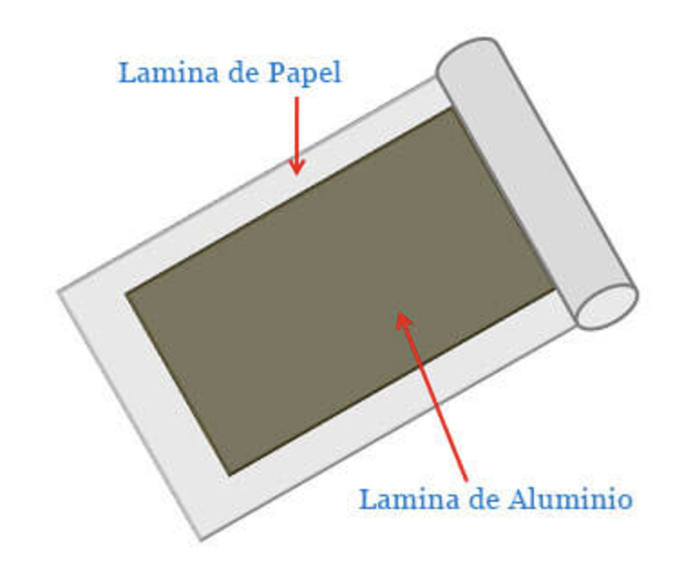 |
Sus características principales son:
- El papel de condensador puede enrollarse en un condensador de gran capacidad y pequeño volumen. El rango de capacitancia es amplio y el voltaje de trabajo es alto.
- Carece de estabilidad química y térmica, por lo que es susceptible al envejecimiento. Hay una pérdida dieléctrica importante.
- Al ser higroscópico y requerir un sellado, no es adecuado para su uso en circuitos de alta frecuencia.
- Bajo coste de producción y técnica sencilla.
Aplicaciones:
- Suelen utilizarse en circuitos de baja frecuencia y de corriente continua.
- Se utilizan en aplicaciones que necesitan mucha tensión o alta corriente.
- También se usan como filtros de audio y en sintonización de radios.
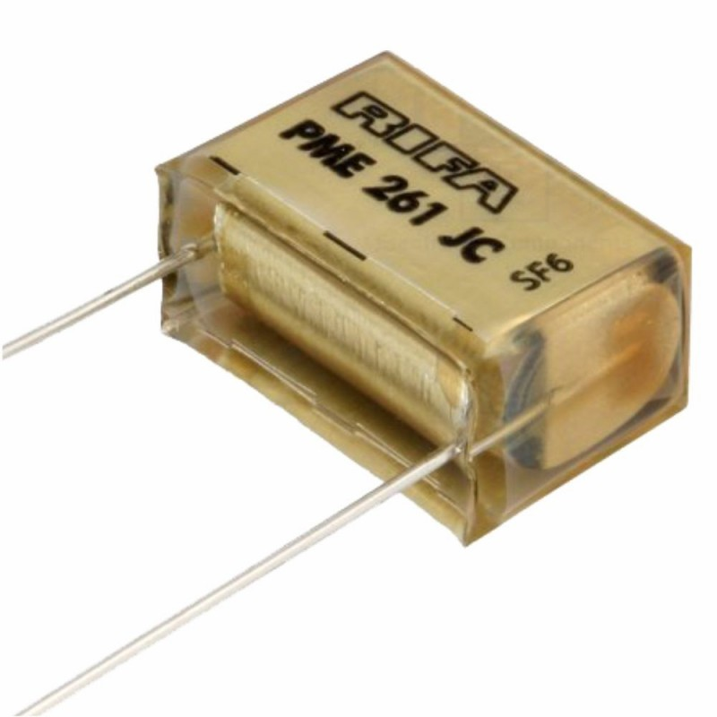 |
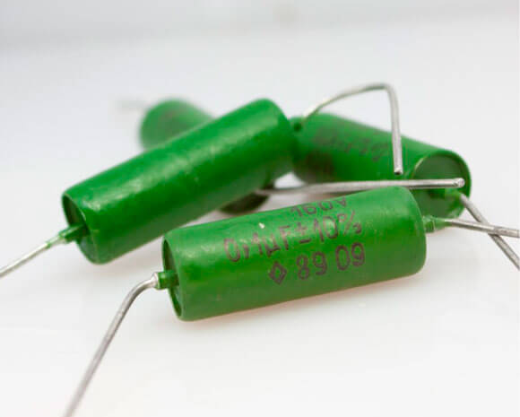 |
Condensadores Cerámicos
Son los más utilizados en los circuitos electrónicos. Estos condensadores se utilizan principalmente cuando se requiere un tamaño físico pequeño y un gran almacenamiento de carga.
En un condensador cerámico, se utiliza material cerámico para construir el dieléctrico y metales conductores para construir los electrodos.
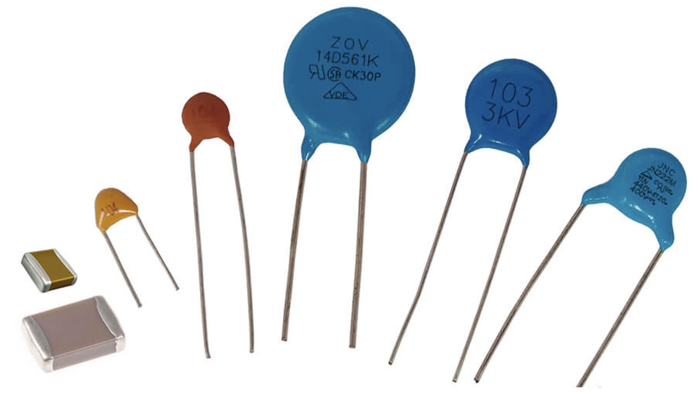
Los condensadores cerámicos están disponibles en las siguientes formas:
|
Condensador de Disco Cerámico Se fabrican recubriendo de plata ambas caras del disco cerámico. El disco cerámico actúa como dieléctrico y la plata recubierta en ambas caras del disco actúa como electrodo. Para una baja capacidad, se utiliza un solo disco cerámico recubierto de plata, mientras que para una alta capacidad se utilizan múltiples capas. |
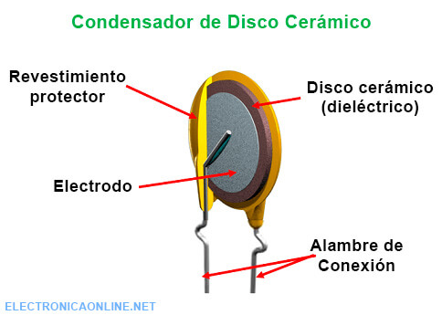 |
|
Condensador Cerámico Tubular Como su nombre indica, el condensador cerámico tubular es un cilindro hueco de material cerámico. Las superficies interiores y exteriores del material cerámico cilíndrico hueco están recubiertas con tinta de plata. El material cerámico cilíndrico hueco actúa como dieléctrico y la tinta de plata recubierta en las superficies interiores y exteriores actúan como electrodos. |
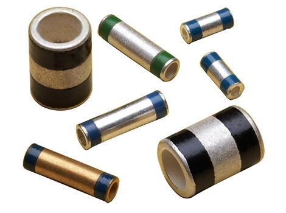 |
|
Condensador Cerámico Multicapa (MLCC) Está formado por múltiples capas de material cerámico y electrodos conductores colocados uno encima del otro. Los electrodos conductores se colocan entre cada capa de material cerámico. Las múltiples capas de material cerámico actúan como dieléctrico. Las múltiples capas de cerámica y electrodos se ponen en contacto a través de las superficies terminales. De este modo, se construyen múltiples capas de material cerámico y electrodos. Algunos MLCC contienen cientos de capas de cerámica y electrodos, cada capa con un grosor de sólo unos pocos micrómetros. La capacidad de cada capa en el MLCC es la misma. La capacidad total del MLCC se obtiene multiplicando la capacidad de una capa por el número total de capas. |
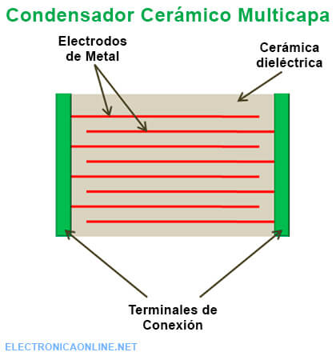 |
Ventajas
- En el mercado se pueden encontrar de cualquier tamaño o forma.
- Son muy baratos.
- También son ligeros.
- Pueden ser diseñados para soportar una tensión suficientemente alta para las aplicaciones electrónicas habituales (hasta 100V).
- Su rendimiento es fiable.
Desventajas
- No se dispone de condensadores cerámicos de muy alta tensión.
- No es posible obtener valores de capacidad muy elevados.
Condensadores Electrolíticos
Los condensadores electrolíticos, también conocidos como condensadores polarizados, se utilizan principalmente cuando se requiere un elevado almacenamiento de carga en un volumen reducido.
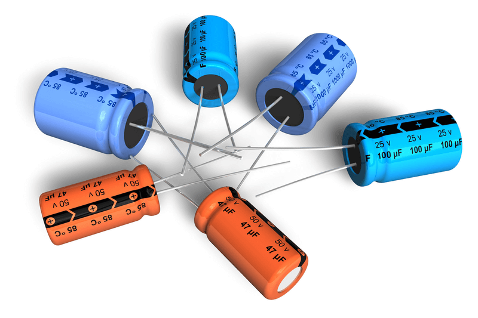
En los condensadores electrolíticos, un electrolito líquido o en gel actúa como uno de los electrodos (sobre todo actúa como cátodo), siendo el otro un metal (normalmente aluminio o tantalio) que lleva una capa de óxido aislante en una cara, que hace las veces de dieléctrico. Aquí tienes un diagrama que indica cómo se fabrican estos condensadores:
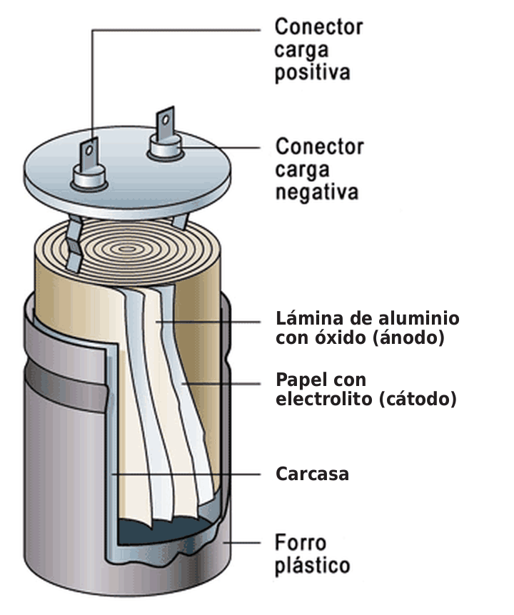
Al ser asimétricos, deben conectarse con una polaridad determinada o se pueden deteriorar e, incluso, llegar a explotar. Por eso tienen indicado de forma muy visible su terminal positivo o negativo:
- Los condensadores de tantalio y aluminio tienen una polaridad marcada con el signo más (+) que indica el lado del ánodo.
- Los condensadores electrolíticos de tipo no sólido tienen una polaridad marcada con el signo menos (-) que indica el lado del cátodo.
También se pueden diferenciar los terminales porque el positivo es más largo, pero es posible que alguien haya cortado las patas del condensador en un uso anterior, por lo que no es muy fiable. Mejor mirar siempre la indicación en la carcasa del condensador. En cualquier caso hay que ser cuidadosos siempre al conectar este tipo de condensadores. En este vídeo puedes ver lo que pasa si conectas uno de ellos al revés:
Por ser un elemento con polaridad, su símbolo eléctrico debe indicar claramente una distinción entre sus terminales positivo y negativo. Por eso, el símbolo eléctrico del condensador electrolítico es diferente del símbolo del condensador genérico. Aquí te dejo los posibles símbolos que pueden usarse para identificar un condensador electrolítico en un circuito:
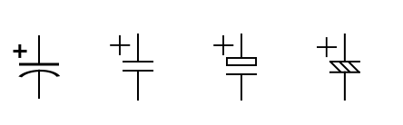
Si usamos el primero o el tercero, no sería necesario incluir el signo más (+), al ser diferentes los dos terminales.
Este tipo de condensadores son muy utilizados por sus importantes ventajas:
- Puede adaptarse a circuitos de mayor frecuencia que un condensador cerámico debido a sus altos valores de capacidad.
- Son mejores que los supercondensadores en el manejo de la corriente de rizado, por lo que se usan siempre en rectificadores de corriente cotinua.
- Son muy compactos para su alta capacidad, lo que ahorra mucho espacio en una placa, ahorrando costes directos.
Los inconvenientes que tienen estos condensadores son, principalmente:
- El voltaje permitido entre sus terminales no es muy alto.
- Si no se usan durante un período largo tras fabricarlos, o se usan con voltajes muy inferiores a aquellos para los que fue diseñado, su capa de óxido puede debilitarse y pueden quedar inservibles.
Curvas de carga y descarga de un condensador
Un condensador no se carga y se descarga instantáneamente, sino que los electrones requieren un tiempo para ir de una placa a otra a través del circuito exterior. El tiempo que tarde en cargarse o descargarse un condensador dependerá de los siguientes factores:
- Capacidad del condensador (C): mientras mayor sea la capacidad, más cargas habrá que mover para cargar o descargar el condensador y, por lo tardo, se tardará más tiempo.
- Resistencia del circuito exterior (R): mientras más resistencia tenga el circuito exterior, más trabajo le constará a las cargas moverse de una placa a la otra y, por lo tanto, el proceso durará más tiempo.
De hecho, el producto R·C tiene dimensiones de tiempo y se conoce como constante de tiempo de carga (o descarga) del condensador. Se representa mediante la letra griega tau (τ) y se mide en segundos (s). En efecto, un ohmio (Ω) multiplicado por un faradio (F) es igual a un segundo (s).
| \[\tau =R\cdot C\] |
Vamos a ver la relación que tiene esa constante de tiempo con el tiempo real que tarda en cargarse (o descargarse) el condensador. Para eso, veremos cómo es esa carga.
Vamos a usar un circuito muy simple en el que tenemos un conmutador que nos permite cargar o descargar un condensador. La resistencia del circuito de carga será R1, mientras que la del circuito de descarga será R2:
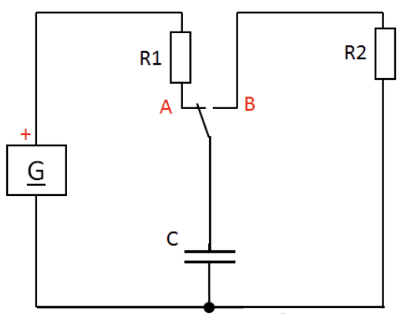
Cuando el conmutador está como en el esquema, la fuente de alimentación (G) cargará al condensador a través de la resistencia R1 hasta que la diferencia de potencial entre sus armaduras sea igual al voltaje del generador (V = Vcc). Cuando el conmutador se cambie, las armaduras del condensador quedarán unidas por R2 y los electrones podrán pasar de una a otra, descargándose hasta que no quede diferencia de potencial entre las placas (V = 0).
Si colocamos un voltímetro (V) para medir la diferencia de potencial entre las armaduras del condensador y un amperímetro (A) para medir la intensidad de corriente que sale o entra del condensador, podemos representar cómo van variando con el tiempo dichos valores al ir cargando y descargando el condensador:
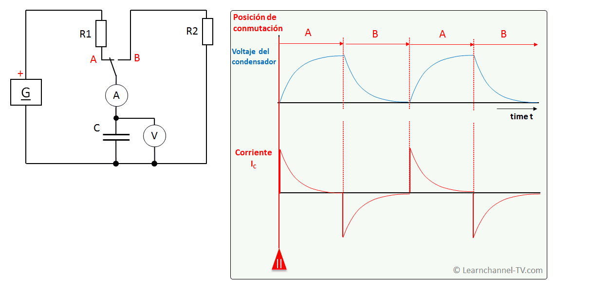
Te dejo aquí una simulación del circuito anterior con diferentes valores para la resistencia de carga y la de descarga. Puedes interactuar con el conmutador del circuito para ver cómo varía la tensión (en verde) y la intensidad (en amarillo) con el tiempo. Incluso puedes cambiar el valor de las resistencia haciendo doble clic sobre ellas, para ver cómo se carga o descarga a diferentes velocidades.
Abrir la simulación en una pestaña nueva
Lo que obtenemos son las denominadas curvas de carga y de descarga del condensador. Esas curvas corresponden matemáticamente a exponenciales. De hecho, se conoce la expresión matemática exacta del voltaje y la intensidad de corriente de un condensador frente al tiempo:
Proceso de carga (desde 0 hasta Vcc voltios del generador):
| \[I=I_{0}\cdot e^{-\frac{t}{R_{1}C}}\] | \[V=V_{CC}(1-e^{-\frac{t}{R_{1}C}})\] |
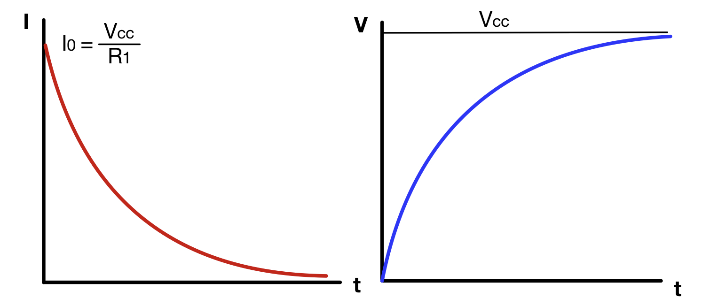 |
|
Proceso de descarga (desde un voltaje inicial V0 hasta 0 voltios):
| \[I=-I_{0}\cdot e^{-\frac{t}{R_{2}C}}\] | \[V=V_{0}e^{-\frac{t}{R_{2}C}}\] |
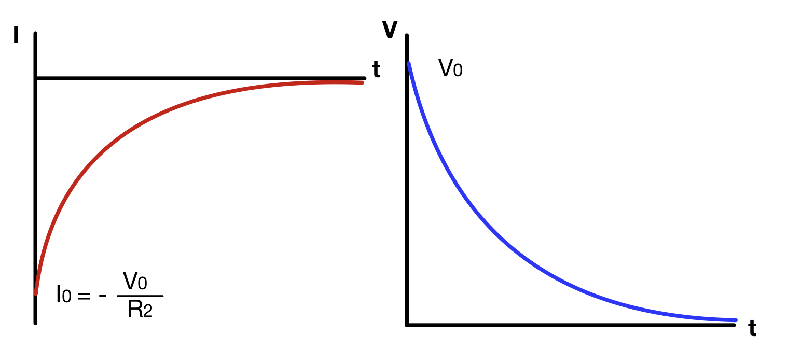 |
|
Si nos centramos en la curva de carga del voltaje entre placas podemos ver que, cuando ha transcurrido un tiempo igual a la constante de tiempo del circuito de carga (tau), el valor del voltaje es el 63 % del máximo (que sería el voltaje de la fuente con la que cargamos el condensador). Para que podamos considerar que el condensador está ya prácticamente cargado al 100 % tendrá que transcurrir un tiempo igual a 5 constantes de tiempo. Ese será el tiempo de carga (tc) del condensador:
| \[t_{c}=5\tau =5R_{1}C\] |
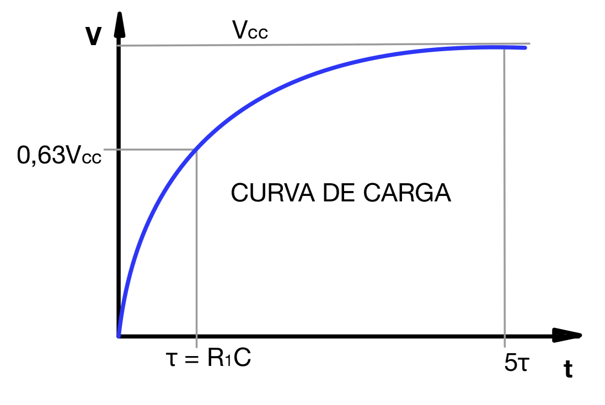
Análogamente, sobre la curva de descarga podemos comprobar que, cuando ha transcurrido un tiempo igual a la constante de tiempo del circuito de descarga (tau), el voltaje entre placas ha descendido hasta un 37 % del voltaje que había cuando empezó a descargarse el condensador. Igual que en la carga, tenemos que esperar hasta que transcurra un tiempo de 5 veces la constante de tiempo para que el voltaje valga prácticamente cero y el condensador quede descargado. Este es el tiempo de descarga (td) del condensador:
| \[t_{d}=5\tau =5R_{2}C\] |
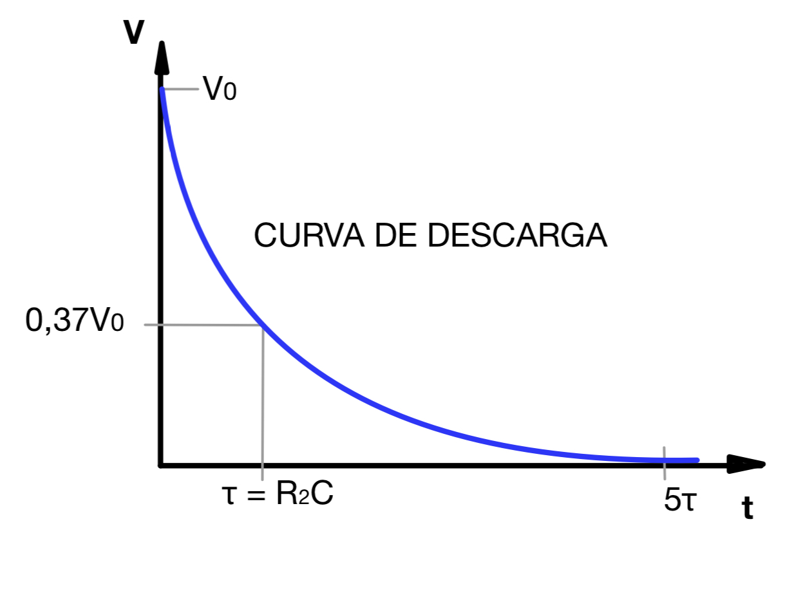
Este valor se obtiene sustituyendo t por R1C en la expresión de V, por lo que queda V = Vcc(1-1/e) = 0,63213Vcc
Este valor se obtiene al sustituir t = R2C en la expresión del voltaje de descarga. Se obtiene V = V0·1/e = 0,36788V0
TAREA 3 - CURVAS DE CARGA Y DESCARGA
Esta tarea consiste en representar las curva de carga y descarga de un circuito real. Trabajaréis en grupos de 3 y tendréis que hacer lo siguiente:
- Montar un circuito que sirva para cargar y descargar un condensador a través de unas resistencias dadas R1 y R2.
- Con los valores de la capacidad del condensador y las resistencias, calcular los tiempos de carga y descarga teóricos del circuito.
- Alimentar el circuito con 5 voltios y realizar la carga del condensador, midiendo la tensión entre sus terminales con el multímetro hasta que quede totalmente cargado. Grabar este proceso en vídeo.
- Analizando el vídeo grabado anteriormente, anotar en una hoja de cálculo los valores del voltaje y el tiempo a intervalos regulares. Como mínimo intentad anotar 10 valores y que uno coincida más o menos con la constante de tiempo y otro con el tiempo de carga (resaltar estos datos con colores distintos en la hoja de cálculo)
- Generar una gráfica en la hoja de cálculo con esos datos anotados, que debería tener la forma de la curva de carga del condensador. Si no es así, intentar justificar qué ha podido pasar.
- Repetir los pasos anteriores pero para la descarga del condensador. Los datos y la gráfica de este proceso de descarga los anotaréis en otra hoja del mismo documento de hoja de cálculo (renombrar las hojas para que se llamen "CARGA" y "DESCARGA")
- Contraste con la simulación. Abrid la simulación de la carga del condensador. Haced doble clic sobre la resistencia R1 (carga), escribid su valor real (por ejemplo, 10k) y pulsad OK; haced lo mismo con el condensador (por ejemplo, 470u: la u significa micro). Pulsad Reiniciar y después Continuar: el condensador empieza a cargarse desde 0 V y la simulación se para sola cuando llega a 3,16 V, el 63 % de los 5 V de la fuente. El tiempo que marca abajo a la derecha (t = …) es la constante de tiempo de la simulación. Anotad en la hoja CARGA tres valores (τ teórica = R1·C, τ simulada y τ medida en vuestra gráfica) y explicad en una o dos frases por qué la medida no coincide exactamente con las otras dos. Con los valores con los que se abre (10 kΩ y 470 µF) se ve así:
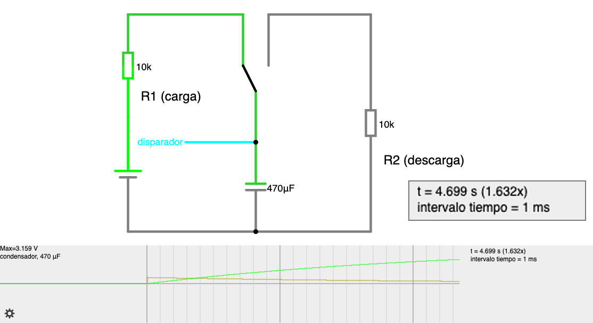
Entregad en la tarea «Circuitos electrónicos: entregas en grupo» de Moodle (una sola entrega por grupo: la puede hacer cualquiera de los tres y cuenta para todos): en el texto en línea, una línea que empiece por TAREA 3: con el enlace a la hoja de cálculo y el enlace de la simulación con vuestros valores (Archivo → Exportar como enlace… → Copiar al portapapeles); y, como archivos, los vídeos de la carga y de la descarga, con los nombres T3-carga y T3-descarga.
Cómo se valora: rúbrica de las entregas en grupo (PDF).
Test
Recuerda: τ = R · C, en τ la carga llega al 63 % y en 5τ el condensador está prácticamente cargado.